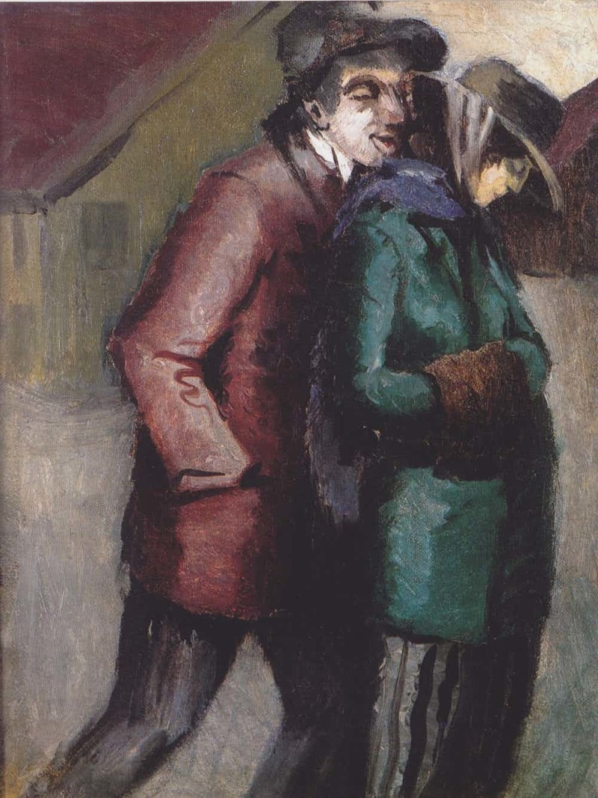
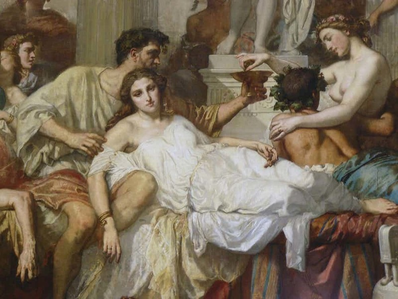
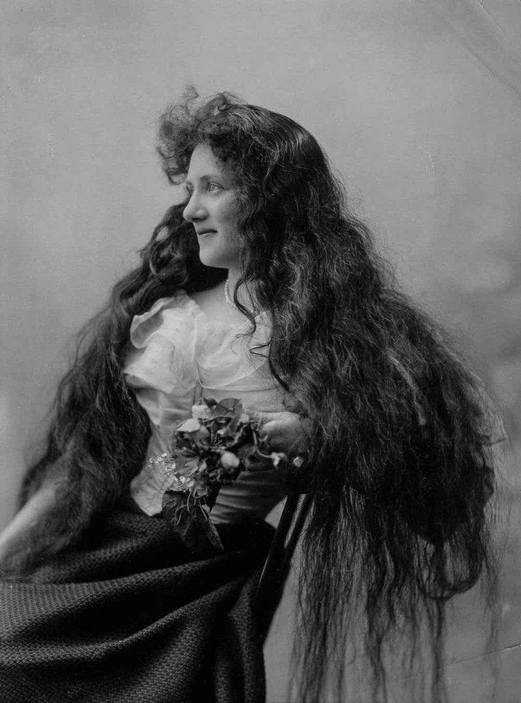

С библейских времен

О проститутках говорится еще в Библии. Самые известные персонажи, занимавшиеся этим непочтенным ремеслом, - Иезавель и Мария Магдалина. Первая является ветхозаветным примером наказания за разврат, вторая, героиня Нового Завета, презираема всеми и ищет заступничества Иисуса. Отсюда можно сделать вывод: еще в бюиблейские времена проституция была вполне широко распространена - и при этом представительницы этой профессии подвергались всеобщему презрению и отвержению.
История лондонских улиц
О том, как давно и широко была распространена проституция в Британии, можно судить по истории городских улиц. Первая улица Gropecunt, что можно перевести как "улица для поиска девушки на ночь", появилась в Лондоне в 1230 году. Как показывают исторические документы, улицы с похожими названиями были во многих британских городах, и лишь с приходом к власти представителей англиканской церкви их двусмысленные названия стали заменять на созвучные, но более приличные. Последняя такая улица исчезла с городских карт Британии в 1561-м, однако девушки, в честь которых она получила свое название, надо думать, никуда не делись.
Отлученные от церкви
И католическая, и протестантская церкви всегда осуждали проституцию. Однако в Средние века, в отличие от нынешних времен, церковники не поддерживали падших девушек, пытаясь вернуть их в лоно добродетели, а обрушивали на них жестокие кары. К примеру, в 1653 году в Париже распоряжением церковных властей были единовременно закрыты все бордели., а девушек, служивших там, выкинули на улицу и стегали кнутами, а потом, обрив им головы, отправили в вечное изгнание.
Первая древнейшая
Проституция - единственная профессия, о которой упоминается в большинстве древнейших исторических письменных источников - от библейских текстов, о которых было сказано выше, до древнегреческих пьес. Так, в одной из комедий Аристофана, написанной в 411 году до н.э., во всех подробностях рассказывается об устройстве этой сферы услуг в Аинах. Так что неудивительно, что эту профессию называют первой древнейшей!
Единственный шанс для женщины
Сегодня девушки, идущие в проституцию, чаще всего имеют хоть какой-то выбор - хотя бы теоретический. Но еще 150-200 лет назад дела обстояли совершенно иначе. В патриархальном обществе, где работа считалась для женщины делом совершенно недопустимым или, в лучшем случае, возмутительно неприличным, женщина, оставшаяся волею судьбы без средств к существованию, могла рассчитывать только на продажу своего тела - потому что покупать ее умения и навыки никто не соглашался. Во многих странах проституция была единственной работой, за счет которой женщина могла прожить, а не умереть с голоду.
Проституция домохозяек
Даже в те времена, когда положение женщин стало благополучнее, проституция оставалась соблазнительным способом заработка для беднейших слоев населения. В Британии в XIX - начале XX века достаточно широкое распространение имела так называемая "проституция домохозяек". Матери семейств, чьи мужья, простые работяги, не могли заработать достаточно, чтобы прокормить многочисленное потомство, в трудные моменты с ведома и согласия мужей могли несколько дней выходить на панель, чтобы залатать прорехи в семейном бюджете.
Первые рекламные издания
В викторианскую эпоху в Англии появились первые рекламные издания, полностью посвященные услугам проституток. Они назывались "Галантными гидами" и содержали максимально полные списки предлагающих себя дам с указанием параметров фигуры, цвета волос и глаз, возраста и, разумеется, цены за услуги. Как указывали издатели, цель гидов была в том, чтобы дать джентльменам из высшего общества "сделать приобретение с открытыми глазами".
Проституция как двигатель американской экономики
Во времена расцвета "Дикого Запада" в США бордель был непременной принадлежностью каждого городка переселенцев и золотодобытчиков. Одновременно он был и стержнем местной экономики. "Веселые заведения" не только давали возможность старателям и ковбоям с удовольствием тратить заработанные деньги на месте, никуда не уезжая, но и отдавали часть этих денег на развитие города: содержательницы борделей на Диком Западе обычно были одними из крупнейших благотворительниц, щедро жертвовавших на церкви, школы и прочие городские нужды.
Три уровня проституции
Практически во всех странах, где торговля женским телом признавалась законной, - от царской России до викторианской Англии - проституция естественным образом делилась на три уровня. Первый - девушки, работавшие в заведениях под началом хозяйки и не имевшие права голоса. Второй - индивидуалки, принимавшие клиентов в собственных квартирах-салонах, как правило, под присмотром индивидуального "менеджера"-сутенера, привлекавшего клиентов. И третий, высший класс - образованные богатые куртизанки, выбиравшие "клиентов" по собственному желанию и иногда обслуживавшие лишь нескольких клиентов. Часто такие дамы полусвета останавливались на единственном богатом покровителе и даже выходили за него замуж.
Проститутки стали первыми пользовательницами банкоматов
Первый прототип современного банкомата изобрел американский эмигрант армянского происхождения Лютер Джордж Симджян в 1939 году. Он предложил свою машину по выдаче наличных для тестирования нью-йоркскому CitiBank. Банкиры согласились попробовать машину в течение полугода. Все это время практически единственными пользователями банкомата: только им могло потребоваться совершать финансовые операции в любое время дня и ночи. Увы, через полгода банк от изобретения отказался. Современные банкоматы вновь появились в США лишь в 1960-х.